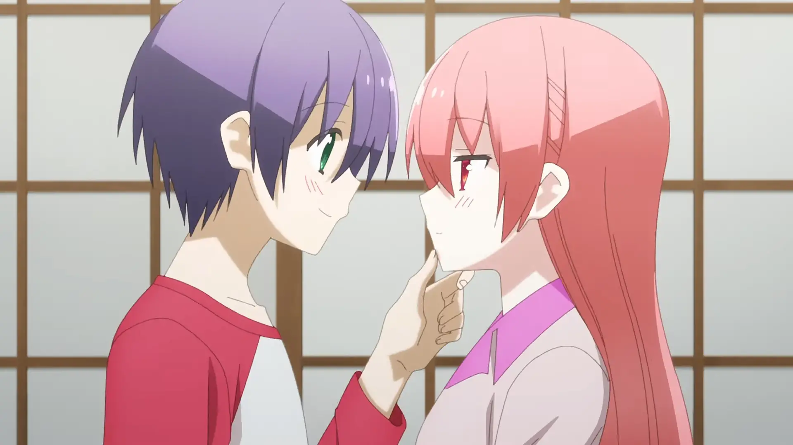
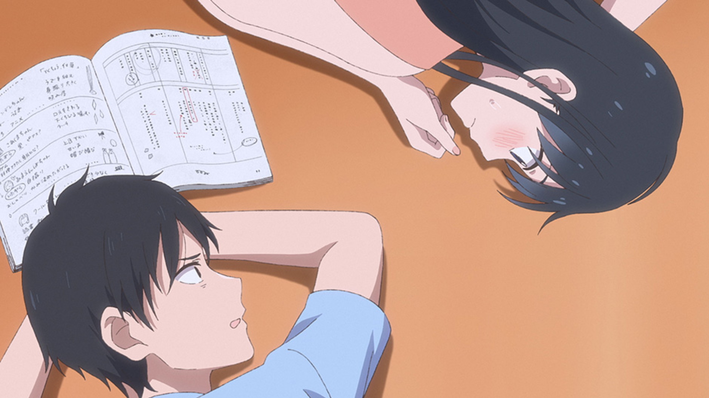
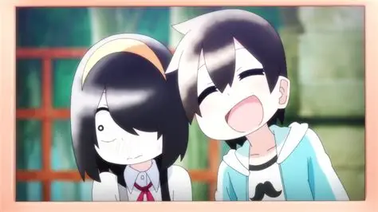
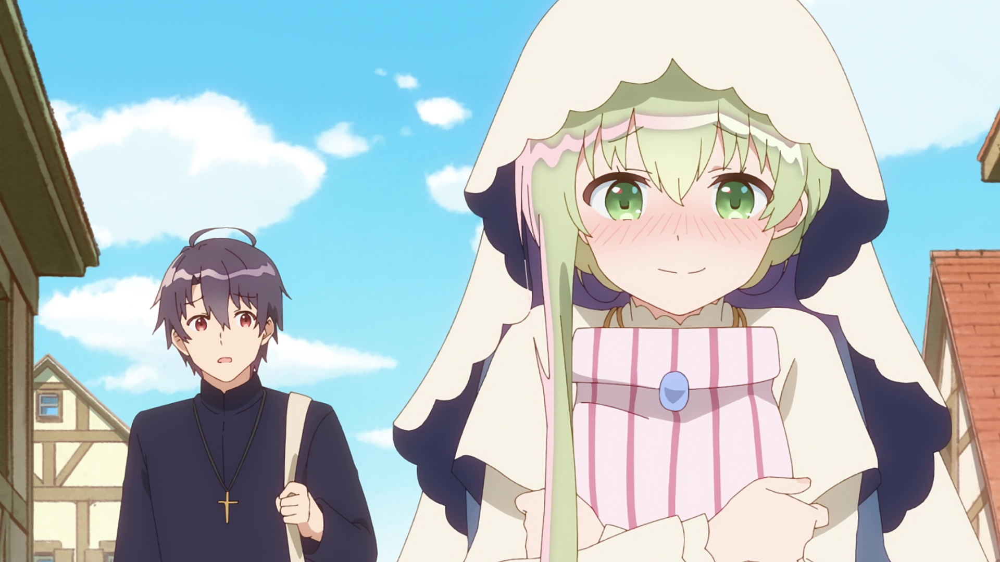
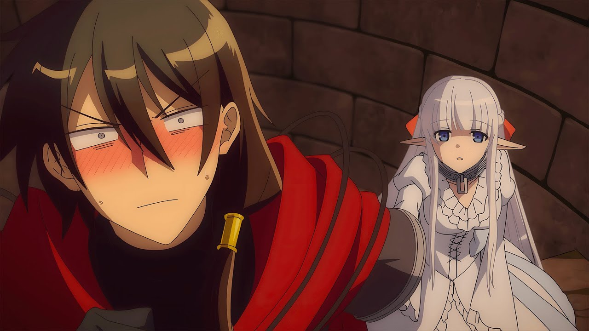
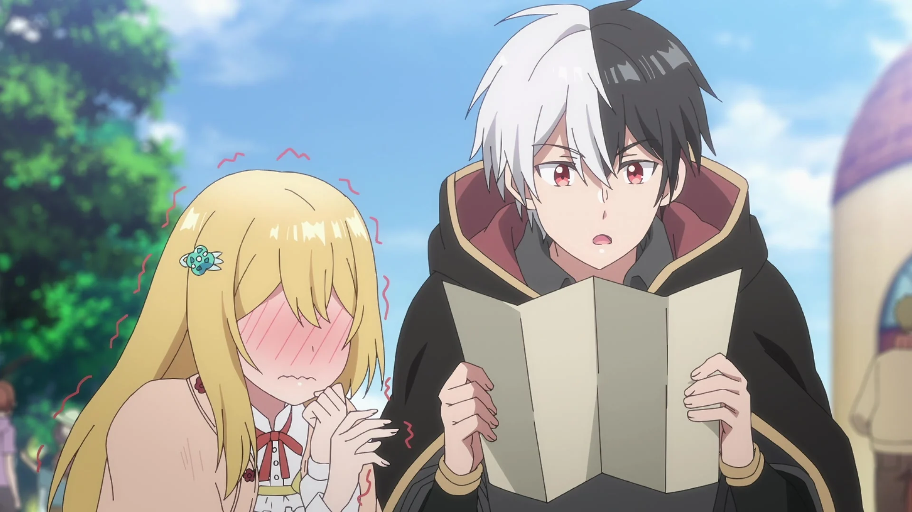

SMASH Senpai
Top 10 Wholesome Romance Anime That Will Restore Your Faith in Love
Sometimes, you don’t want drama. You don’t want heartbreak. You just want something gentle.
Wholesome romance anime offer exactly that — soft moments, sincere emotions, and love stories that feel comforting rather than exhausting. These are the kinds of anime that make your chest feel warm and your heart a little lighter.
From shy glances and quiet conversations to relationships built on trust, kindness, and emotional safety, wholesome romance anime remind us that love doesn’t have to be painful to be meaningful.
Whether it’s first love, slow-burning affection, or couples learning how to care for one another, these stories focus on emotional connection over unnecessary conflict.
These are the Top 10 Wholesome Romance Anime — heartwarming, emotionally healing, and perfect for anyone who wants to believe in love again.
Sponsored
#1 Kimi ni Todoke: From Me to You

Kimi ni Todoke is the definition of gentle romance. It tells a slow, emotionally sincere love story that focuses on kindness, patience, and understanding. The series follows Sawako Kuronuma, a painfully shy girl who is constantly misunderstood because of her quiet nature and scary appearance. Despite having a heart full of warmth, she struggles to connect with others.
Everything begins to change when she meets Shouta Kazehaya — a genuinely kind, approachable boy who treats her with respect and curiosity instead of fear. Their relationship doesn’t rush forward. Instead, it grows through small interactions: shared smiles, awkward conversations, and moments of silent understanding.
What makes Kimi ni Todoke so wholesome is how realistically it portrays emotional growth. Sawako’s journey isn’t just about romance — it’s about learning to communicate, gaining confidence, and forming friendships. Love becomes a safe space, not a source of anxiety or pressure.
The anime takes its time, allowing emotions to bloom naturally. Confessions feel earned. Misunderstandings feel human. Every emotional step forward feels meaningful because the characters work hard for it.
Kimi ni Todoke reminds viewers that love doesn’t have to be dramatic to be powerful. Sometimes, the quietest stories leave the deepest impact.
- Episode count: 37+ (multiple seasons)
- Genre: Romance, Slice of Life, School
- Known for: Slow-burn romance, emotional sincerity
- Core theme: Kindness and emotional growth
play anime smash or pass here (not sponsored)
SMASH SENPAI – Smash or Pass#2 A Sign of Affection

A Sign of Affection delivers one of the most tender and emotionally mature romance stories in recent anime. It follows Yuki, a deaf college student experiencing the world through her own quiet perspective. Her life begins to shift when she meets Itsuomi, a well-traveled, open-minded man who shows genuine interest in understanding her world.
What sets this anime apart is its focus on communication — not just spoken words, but gestures, expressions, and emotional awareness. Romance here isn’t about dramatic conflict. It’s about curiosity, patience, and mutual respect. Itsuomi doesn’t try to “fix” Yuki; he adapts, learns, and listens.
The relationship feels incredibly healthy. Boundaries are respected. Feelings are acknowledged. Moments of affection are soft and sincere, making every interaction feel intimate without ever becoming overwhelming.
Visually, the anime supports its emotional tone with calm colors, gentle animation, and a peaceful atmosphere. Even quiet scenes carry emotional weight, allowing viewers to fully connect with the characters’ feelings.
A Sign of Affection proves that romance can be deeply moving without loud drama. It’s a story about love that listens — and that alone makes it unforgettable.
- Episode count: 12
- Genre: Romance, Slice of Life
- Known for: Gentle storytelling, mature relationship
- Core theme: Communication and emotional understanding
Sponsored
#3 The Angel Next Door Spoils Me Rotten

The Angel Next Door Spoils Me Rotten is pure comfort anime. It focuses on a simple, cozy romance that slowly grows through everyday interactions. The story centers on Amane, a quiet, emotionally reserved boy, and Mahiru, his seemingly perfect neighbor who is admired by everyone.
What begins as casual help quickly turns into a gentle routine. Shared meals. Quiet evenings. Small acts of care that slowly break down emotional walls. There’s no forced drama here — just two people learning how to rely on one another.
Mahiru’s kindness isn’t exaggerated, and Amane’s emotional distance feels grounded and relatable. Their bond develops naturally, making every moment of closeness feel earned rather than rushed. The romance thrives in silence and comfort.
The anime excels at showing how love can grow from emotional safety. Characters open up not through big confessions, but through trust, consistency, and shared vulnerability.
The Angel Next Door Spoils Me Rotten is perfect for viewers who want warmth over chaos. It’s a reminder that sometimes, the strongest love is the one that feels like home.
- Episode count: 12
- Genre: Romance, Slice of Life
- Known for: Cozy atmosphere, soft romance
- Core theme: Emotional comfort and trust
#4 Tonikawa: Over The Moon For You
Tonikawa: Over The Moon For You flips the usual romance formula in the most wholesome way possible. Instead of endless will-they-won’t-they tension, the series begins with a confession and an immediate marriage. Nasa Yuzaki, a socially awkward yet determined boy, suddenly finds himself married to the mysterious and gentle Tsukasa.
What follows isn’t drama or conflict, but pure domestic warmth. The anime focuses on everyday moments — cooking together, walking home at night, holding hands, and learning how to live as a couple. The romance progresses constantly, yet remains soft, innocent, and emotionally comforting.
Tsukasa’s calm affection contrasts beautifully with Nasa’s nervous excitement. Their interactions are filled with blushing, awkward pauses, and quiet happiness. Love here isn’t about passion or intensity — it’s about choosing each other every day.
The anime also explores commitment in a refreshing way. Marriage isn’t portrayed as the end goal, but the beginning of emotional intimacy. Trust, communication, and shared vulnerability take center stage.
Tonikawa is perfect for viewers who want romance without stress. It’s soothing, heartwarming, and endlessly cozy — a reminder that love doesn’t need obstacles to feel meaningful.
- Episode count: 24+
- Genre: Romance, Slice of Life
- Known for: Married couple romance, cozy vibes
- Core theme: Commitment and everyday love
Sponsored
#5 Pseudo Harem
Pseudo Harem delivers one of the most unexpectedly wholesome romance experiences in anime. Despite its misleading title, this series is not about multiple love interests — it’s about one girl expressing her affection through playful roleplay. Rin Nanakura enjoys acting, and she uses different personalities to tease and entertain her crush, Eiji Kitahama.
What makes the anime special is how naturally the chemistry flows. Rin’s “harem” personalities aren’t fanservice-driven; they’re expressions of affection. Each act reveals a different side of her feelings, while Eiji slowly realizes how deeply she cares.
The romance builds through laughter, comfort, and shared creativity. There’s no cruelty, no emotional manipulation — just two people enjoying each other’s presence. The teasing never crosses into embarrassment, keeping the tone warm and light.
Underneath the humor, the series explores vulnerability. Rin uses acting as a shield, while Eiji learns to see past the performances. Their emotional bond strengthens as they grow more honest with themselves.
Pseudo Harem proves that romance doesn’t need high drama. Sometimes, love grows best through smiles, jokes, and quiet understanding.
- Episode count: 12
- Genre: Romance, Comedy, School
- Known for: Playful teasing, creative romance
- Core theme: Affection through self-expression
#6 My Clueless First Friend
My Clueless First Friend is one of the purest and most heart-healing anime experiences. It focuses on childhood innocence, kindness, and the quiet beginnings of emotional connection. Akane Nishimura is a lonely girl often bullied by her classmates, while Taiyou Takada is a cheerful, completely oblivious boy who sees the world with genuine positivity.
Instead of joining in on cruelty, Taiyou befriends Akane without hesitation. He treats her nickname, meant to hurt her, as something cool and special. His kindness is unintentional, but deeply impactful, slowly changing how Akane sees herself.
The anime doesn’t rush romance. Instead, it builds emotional safety. Friendship becomes the foundation, allowing affection to grow naturally. Every smile Akane gains feels like a small victory.
What makes this series stand out is its sincerity. There’s no cynicism, no heavy drama — just warmth, empathy, and emotional healing. Even adult viewers will feel a quiet nostalgia watching these characters grow.
My Clueless First Friend reminds us how powerful simple kindness can be. It’s wholesome in the truest sense — gentle, uplifting, and deeply comforting.
- Episode count: 13
- Genre: Slice of Life, School
- Known for: Emotional warmth, innocent tone
- Core theme: Kindness and emotional healing
Sponsored
#7 Saint Cecilia and Pastor Lawrence
Saint Cecilia and Pastor Lawrence is the definition of soft, peaceful romance. Set in a quiet village, the anime follows Lawrence, a kind-hearted pastor, and Cecilia, a gentle saint who lives under his care. While Cecilia is revered by others, Lawrence treats her like a normal girl — and that simple kindness becomes the heart of the romance.
The relationship grows through everyday moments. Sharing meals, walking through the village, and caring for one another form the foundation of their bond. There is no urgency, no emotional chaos — just slow, comforting intimacy.
Cecilia’s affection is obvious to the audience, but Lawrence remains hilariously oblivious. This dynamic creates light comedy without ever becoming frustrating. The tone stays warm, gentle, and sincere.
What makes this anime special is its atmosphere. The setting feels calm, almost therapeutic. The romance never shouts — it whispers. Every smile, every shared glance, feels meaningful.
Saint Cecilia and Pastor Lawrence is perfect for viewers who want romance that feels safe. It’s a story about care, patience, and love expressed through quiet presence.
- Episode count: 12
- Genre: Romance, Fantasy, Slice of Life
- Known for: Gentle pacing, healing atmosphere
- Core theme: Love through care and patience
#8 The Magical Girl and the Evil Lieutenant

The Magical Girl and the Evil Lieutenant takes a classic enemies setup and transforms it into something unexpectedly wholesome. Mira, an evil organization lieutenant, finds himself constantly facing a magical girl named Byakuya — except he’s far more concerned with her well-being than defeating her.
Instead of hatred, their encounters are filled with concern, awkward kindness, and gentle misunderstandings. Mira worries about Byakuya being overworked, underpaid, and emotionally exhausted. What starts as curiosity slowly turns into genuine affection.
The anime shines through its contrast. Evil versus justice becomes irrelevant when compassion enters the picture. Their relationship grows not through grand confessions, but through quiet acts of care.
The short episode format keeps the story light and sweet. There’s no heavy drama — just warmth, soft humor, and emotional sincerity.
This anime proves that even rivals can find comfort in one another. It’s a wholesome reminder that love doesn’t always follow rules — sometimes, it just happens.
- Episode count: 12 (short episodes)
- Genre: Romance, Comedy, Fantasy
- Known for: Enemies-to-gentle-lovers dynamic
- Core theme: Compassion over conflict
#9 An Archdemon’s Dilemma: How to Love Your Elf Bride
An Archdemon’s Dilemma: How to Love Your Elf Bride is a fantasy romance built on emotional awkwardness and pure sincerity. Zagan, a feared archdemon, falls in love at first sight with Nephy, a quiet elf girl he rescues.
Despite his intimidating reputation, Zagan is socially hopeless. He has no idea how to express affection, leading to adorable misunderstandings. Nephy, equally shy, responds with gentle patience. Their romance grows through mutual respect and emotional safety.
The anime balances fantasy action with cozy domestic scenes. Cooking together, living under the same roof, and learning how to communicate become the heart of the story.
What makes this series wholesome is its focus on consent, care, and trust. There’s no manipulation, no cruelty — just two lonely souls learning how to love.
An Archdemon’s Dilemma is perfect for fans of slow, comforting romance with a fantasy backdrop.
- Episode count: 12
- Genre: Romance, Fantasy
- Known for: Shy couple, emotional warmth
- Core theme: Learning how to love
#10 I’m Giving the Disgraced Noble Lady I Rescued a Crash Course in Naughtiness
Despite its provocative title, I’m Giving the Disgraced Noble Lady I Rescued a Crash Course in Naughtiness is surprisingly wholesome. The story follows Allen, a kind mage, and Charlotte, a noble girl shunned and isolated after false accusations.
Allen takes Charlotte in, determined to help her rediscover joy. His idea of “naughtiness” isn’t lewd — it’s about teaching her how to laugh, relax, and live freely. Simple pleasures become acts of rebellion against her painful past.
Their relationship develops gently. Trust comes first. Emotional healing follows. Romance grows naturally from shared comfort and mutual understanding.
The anime emphasizes emotional recovery. Charlotte slowly regains confidence, while Allen learns how deeply his kindness matters. Their bond feels earned, not forced.
This series is a reminder that wholesomeness isn’t about innocence — it’s about compassion, respect, and emotional care.
- Episode count: 12
- Genre: Romance, Fantasy, Slice of Life
- Known for: Misleading title, healing romance
- Core theme: Emotional recovery and kindness
Play Smash or Pass on SMASH Senpai.
 PLAY SMASH OR PASS
PLAY SMASH OR PASS